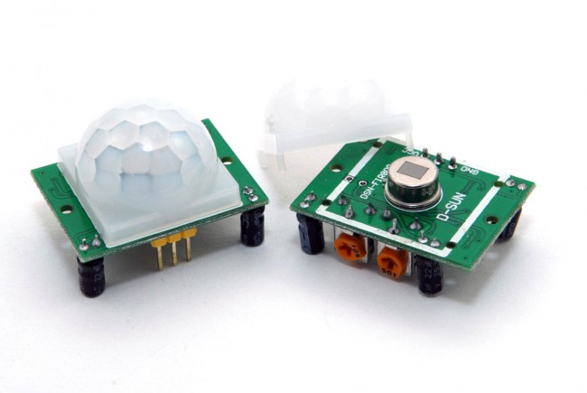
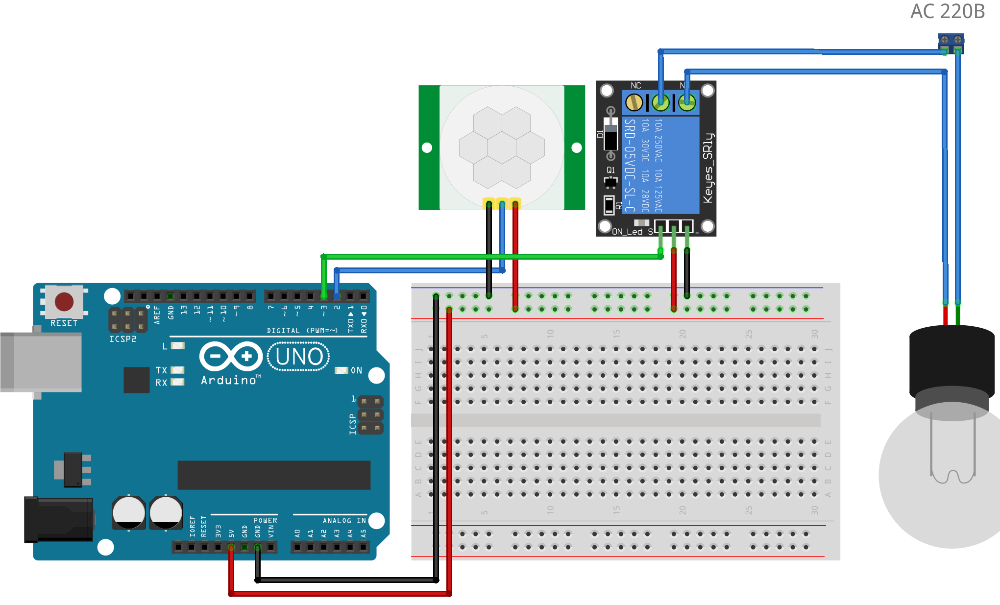

Управление реле с датчиком движения
Датчик движения на основе пироэлектрического эффекта (PIR-датчик) часто используются в охранных системах и в быту для обнаружения движения в помещении, для автоматического включения света в подъезде.

Схема системы автоматического включения света показана на рис. 2.

Скетч. Управление реле с помощью PIR-датчика
int PIN_RELE=8; //Вывод для подключения реле int PIN_PIR=5; //Вывод для подключения PIR-датчика int mov; void setup() { pinMode(PIN_RELE, OUTPUT); //Режим вывода для реле digitalWrite(PIN_RELAY, HIGH); //Выключаем реле - посылаем лог. 1 } void loop() { mov=digitalRead(PIN_PIR); // Считываем сигнал с PIR-датчика if(mov == HIGH) { digitalWrite(PIN_RELE, LOW); // Включаем реле - посылаем лог. 0 } else { digitalWrite(PIN_RELE, HIGH); //Выключаем реле } delay(1000); // Проверяем значения один раз в секунду }
Пояснения к скетчу управления реле с помощью PIR-датчика
Переменная PIN_RELE содержит номер вывода Arduino, к которому подключено реле, PIN_PIR — номер вывода Arduino с подключенным PIR-датчиком.
В функции setup устанавливаем начальное положение реле (закрытое).
В функции loop проверяем наличия высокого уровня сигнала от датчика с помощью функции digitalRead. Если мы получаем HIGH, значит датчик сработал и включаем реле, посылая с помощью функции digitalWrite на реле логический 0. При этом лампочка загорится.
Если датчик не сработал (логический 0 на выводе PIN_PIR), выключаем реле, посылая с помощью функции digitalWrite на реле логическую 1.
Источники
arduinomaster.ru - Подключение реле к Ардуино
arduinomaster.ru - Управление реле ардуино: скетч